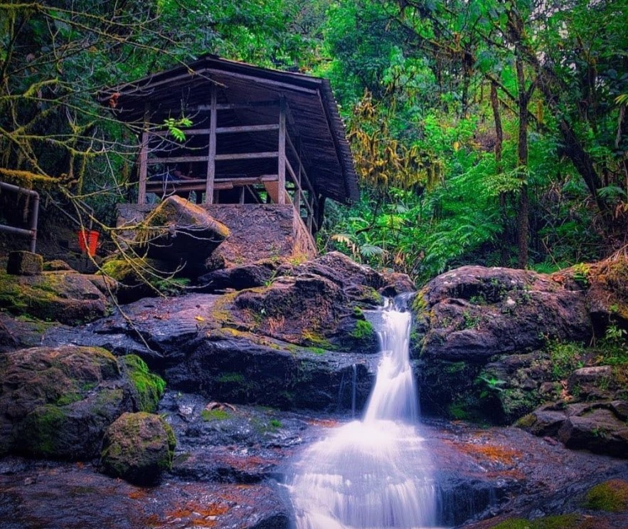

Popular Tourist Centers in Calabar
 Tinapa Resort
Tinapa Resort
An entertainment and business resort, Tinapa offers shopping, water parks, and scenic views for a complete family experience.

Obudu Mountain Resort
Nestled in the mountains, Obudu Resort is known for its cool climate, cable cars, and natural beauty, perfect for relaxation and adventure.
 Drill Ranch
Drill Ranch
Home to endangered drill monkeys, Drill Ranch is a unique wildlife sanctuary dedicated to conservation and education.
 Marina Resort
Marina Resort
Located on the waterfront, Marina Resort is a beautiful destination offering historical exhibits, boat rides, and serene views.